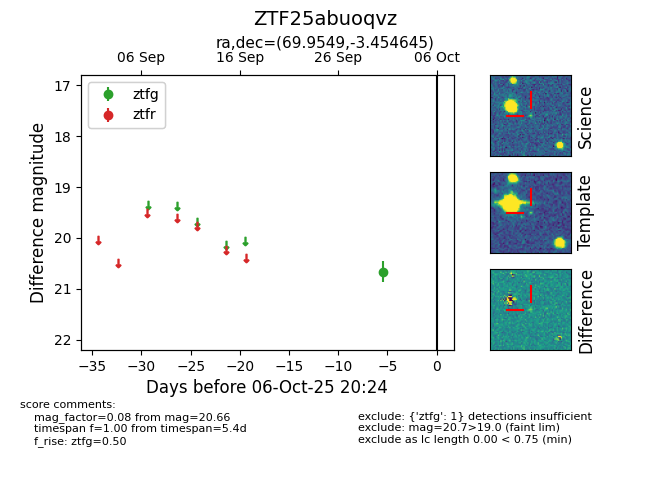

FINK: ZTF25abuoqvz
Lasair: ZTF25abuoqvz
ALeRCE: ZTF25abuoqvz
ZTF25abuoqvz (ztf,fink)
equatorial (ra, dec) = (69.9549,-3.45465)
galactic (l, b) = (199.9221,-30.66896)

last ztfg=20.66
1 ztfg detections